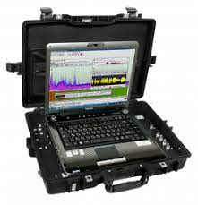
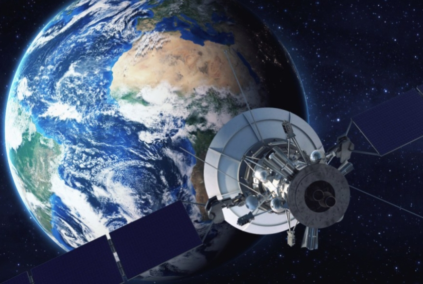
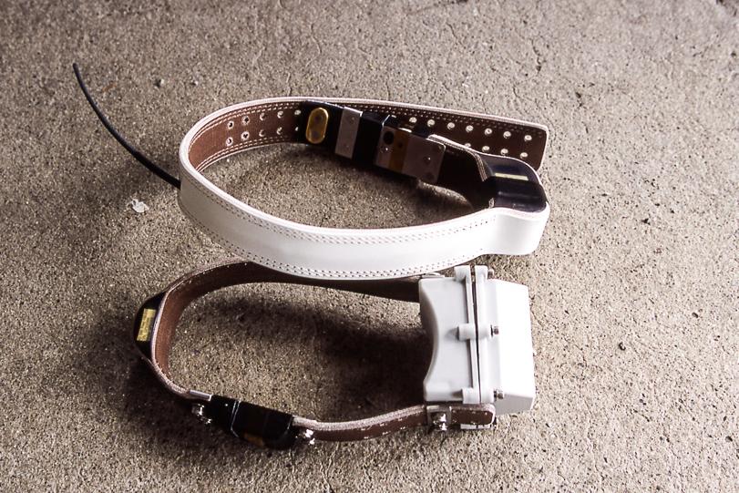

Rádio: É o mais comum e menos caro, e está em uso desde os anos 50. Permite monitorar
espécies que vão de pequenas aves até grande mamíferos, como lobos, leões e
baleias.
A forma que o monitoramento por rádio funciona é de forma simples, existe dois link
o transmissor que é linkado ao animal e o recebedor que recebe e armazena as
informações enviados do transmissor, onde são enviados de alta frequência ou VHF
(very high frequency, em inglês), tal como faz uma estação de rádio. Este
transmissor é usado para localização. Em geral é acoplado a uma coleira com
bateria – o chamado rádio-colar —e colocado em volta do tornozelo, pescoço, asa,
carapaça, ou barbatana dorsal de um animal. Do outro lado, está o receptor que
capta o sinal VHF, como um rádio doméstico que sintoniza em uma estação.



Satélite: Este método é semelhante ao monitoramento por rádio, mas em vez de enviar o
sinal para um receptor, o rádio-colar envia o sinal de rádio para um satélite. Desta
forma, os pesquisadores não precisam está próximos do animal o acompanhamento
pode ser feito pelo computador.
A "telemetria" que é o sistema de captar os sinais transmissor-recebedor, pelo Argos,
um sistema baseado em satélites, que funciona desde 1978. Ele coleta e processa
dados ambientais de plataformas fixas e móveis em todo o mundo e os transmite
para os pesquisadores.
GPS: É a mais nova forma de monitoramento onde que o rádio-colar (Que é o
nosso transmissor-recebedor), não é mais um transmissor mas sim só um recebedor
de rádio. Este dispositivo grava e armazena dados de localização enviados por
satélites em intervalos pré-determinados. Estes dados podem ser recuperados do
próprio dispositivo ou transmitidos via VHF ao pesquisador através de um
computador conectado à internet.